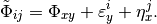
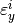
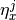
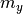
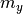
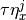
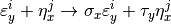
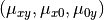
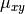

Guide¶
ipfp_python contains Pyython implementations of the Iterative
Projection Fitting Procedure (IPFP) algorithm to solve for equilibrium
and do comparative statics in several separable matching models
of the
Choo and Siow 2006 variety.
This class of matching models is one-to-one, bipartite, separable
with perfectly transferable
utilities—see Galichon and Salanié 2020
for a general study.
For concreteness, I will use the terms men and women to describe
the two sides of the market. The joint surplus created by a match between a man
 who belongs to a discrete category
who belongs to a discrete category  and a woman
and a woman
 who belongs to a discrete category
who belongs to a discrete category  is
is

The original Choo and Siow model had the  and  error terms
drawn iid from a standard type I extreme value (multinomial logit) distribution. We call it
the homoskedastic model. The function ipfp_homo_solver() solves for its equilibrium
given the values of the joint surplus (the matrix  ) and the margins (the numbers
) and the margins (the numbers
 and  of men and women in each discrete category).
and  of men and women in each discrete category).
The ipfp_python module also contains solvers for
the homoskedastic model without singles (
ipfp_homo_solver_no_singles(), for use when only data on realized matches is available)a gender-heteroskedastic model (
ipfp_hetero_solver()), which allows for with a scale parameter on the error term for women (that is, )a gender- and type-heteroskedastic (
ipfp_heteroxy_solver()), with type-dependent scale parameters on the error terms for men and for women:

In the heteroskedastic models, the scale parameters must also be provided as inputs to the algorithm.
Each solver has two tuning parameters that control when it stops:
tol is a tolerance on the difference between candidate solutions at two successive iterations
maxiter sets an upper limit on the number of iterations.
They are set at reasonable defaults, but you may want to change tol at least.
In addition to the equilibrium matching patterns by cell , (only  for ipfp_homo_solver_no_singles()),
the solvers also return the adjustment errors on the margins, and, if the optional
parameter gr is set to True, the derivatives of the equilibrium matching
patterns with respect to the
parameters: the joint surplus, the margins, and the scale parameters if any.
The algorithm and its properties are described in detail in Galichon and Salanié 2020. It is extremely fast and robust.